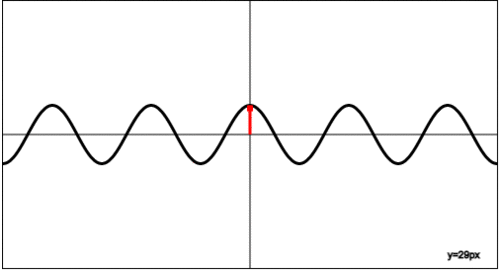
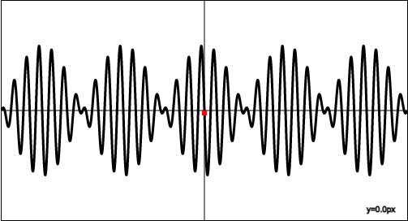

The first two animations simulate rightwards or leftwards propagating sine waves whose equations are: $$y=A\sin(wt-kx+\varphi)$$ Here \(A\) denotes the wave's amplitude, \(w\) its angular frequency (\(w=2 \pi f \), \(f\) being the ordinary frequency), \(k\) its wavenumber (\(k=\frac{w}{u}\), \(u\) being the speed of the wave), and \(\varphi\) its phase shift.
The third animation displays the wave resulting from the superposition, that is, the sum, of the first two waves: $$y=y_1+y_2=A_1\sin(w_1t-k_1x+\varphi_1)+A_2\sin(w_2t-k_2x+\varphi_2)$$
Use the following tables to modify the parameters of the waves. The approximate current elongation of the point at \(x=0\) in pixels (px) is displayed in the lower right corner of each box. You can simulate a leftwards propagating sine wave by setting the wave's speed \(u\) to a negative value.
| Amplitude [px] | \(A_1 = \) |
|---|---|
| Frequency [Hz] | \(f_1 = \) |
| Wave speed [px/s] | \(u_1 = \) |
| Phase shift [rad] | \(\varphi_1 = \) |
| Angular frequency [Hz] | \(w_1=\) |
|---|---|
| Wavenumber [1/px] | \(k_1=\) |
| Amplitude [px] | \(A_2 = \) |
|---|---|
| Frequency [Hz] | \(f_2 = \) |
| Wave speed [px/s] | \(u_2 = \) |
| Phase shift [rad] | \(\varphi_2 = \) |
| Angular frequency [Hz] | \(w_2=\) |
|---|---|
| Wavenumber [1/px] | \(k_2=\) |
The following animation shows the first wave whose equation is \(y_1=A_1 \sin(w_1t-k_1x+\varphi_1)\).
The following animation shows the second wave whose equation is \(y_2=A_2 \sin(w_2t-k_2x+\varphi_2)\).
The following animation shows the wave resulting from the superposition of the previous two waves whose equations are \(y_1=A_1 \sin(w_1t-k_1x+\varphi_1)\) and \(y_2=A_2 \sin(w_2t-k_2x+\varphi_2)\).
The dimensions of the boxes are \(500px\times 270 px\)
The sum wave can take a number of different shapes depending on the parameters of the two waves that constitute it. For instance, standing waves and beats are examples of such wave patterns.
When the two waves have different directions of propagation, it is possible to spot a pattern (in the sum box) constisting of nodes (points on the \(x\)-axis whose elongation is always \(y=0\)) and antinodes (points on the \(x\)-axis whose amplitude of oscillation is maximal).
This behaviour of the sum wave can be mathematically justified in the following way: $$y=y_1+y_2=A\sin(wt+kx)+A\sin(wt-kx)=2A\sin(wt)\cos(kx)$$ Here we assumed that the amplitudes, angular frequencies and wavenumbers of the two waves are the same, their directions of propagation over time different (note the change in the sign before \(kx\)), and used the trigonometric identity \(\sin a + \sin b = 2\sin(\frac{a+b}{2})\cos(\frac{a-b}{2})\) for real numbers \(a\) and \(b\).
Analyzing the obtained formula, we can argue that the term \(2\cos(kx)\) is constant for a single point \(x\) on the \(x\)-axis. Therefore, due to the other term \(\sin(wt)\), every point of the wave will oscillate in place with a fixed amplitude. The following gif shows what a standing wave would look like:

Beats typically appear in cases where the frequencies of the two waves are similar. Consider two waves with frequencies \(f_1\) and \(f_2\) that have the same amplitudes. Their sum is equal to the following: $$y=y_1+y_2=A\sin(2\pi f_1 t-k_1x)+A\sin(2\pi f_2 t-k_2x)$$ $$y=2A\sin(2\pi \frac{f_1+f_2}{2} t- \frac{k_1+k_2}{2}x)\cos(2\pi \frac{f_1-f_2}{2} t- \frac{k_1-k_2}{2}x)$$
When \(f_1 \approx f_2\), that is, when \(f_1-f_2\) is small enough (suppose that \(f_1 > f_2\)), we can notice a pattern which consists of a series of identical shapes - beats. In other words, the amplitude of osicllations periodically increases and decreases due to the term \(\cos(2\pi \frac{f_1-f_2}{2} t- \frac{k_1-k_2}{2}x)\), which looks like this:

This phenomenon can also be demonstrated by playing two sound waves with similar frequencies at the same time, say \(f_2=440\)Hz and \(f_1=441\)Hz. Listeners will notice periodic appearing and disapearing of sound. The frequency with which the beats are heard is exactly the difference of the two individual frequencies: \(f_{beat}=f_1-f_2\).